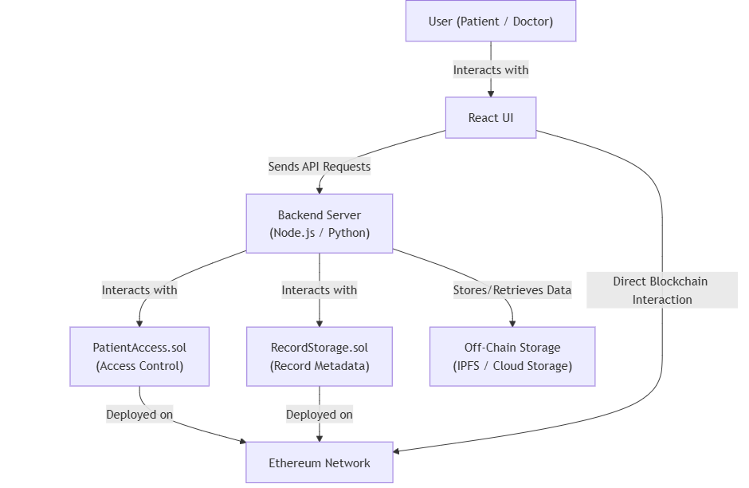

Below is a preview of our Healthcare Blockchain Project's secure interface. For a fully interactive experience, please visit our live service page.
The Healthcare Blockchain Project presents a decentralized approach to managing medical records, ensuring data integrity and patient-controlled access. By leveraging Solidity-based smart contracts on Ethereum and integrating a Python-driven backend for off-chain processing, the system achieves secure, immutable record storage while facilitating role-based interactions. This document provides a comprehensive technical overview, detailing the architecture, implementation, testing strategies, and research insights that informed the project design.
Modern healthcare demands secure and efficient management of patient data. Traditional centralized systems are prone to data breaches and lack transparency. In contrast, blockchain technology offers immutable record-keeping and decentralized control. This project was developed to explore how smart contracts and blockchain integrations can address these challenges, ensuring that patients maintain control over their records while healthcare providers gain access under controlled conditions.
The system architecture combines on-chain and off-chain components:
The integration of these layers ensures a balance between security, scalability, and user accessibility.
The project is organized into several modules:
smart_contracts/ directory, they include PatientAccess.sol and RecordStorage.sol.frontend/ folder, which includes components, pages, hooks, and context for blockchain interaction.backend/ directory, providing APIs for off-chain logic and additional processing.
// SPDX-License-Identifier: MIT
pragma solidity ^0.8.0;
contract PatientAccess {
mapping(address => mapping(address => bool)) public accessControl;
// Grant access to a doctor
function grantAccess(address doctor) public {
accessControl[msg.sender][doctor] = true;
}
// Revoke access from a doctor
function revokeAccess(address doctor) public {
accessControl[msg.sender][doctor] = false;
}
// Verify access
function hasAccess(address patient, address doctor) public view returns (bool) {
return accessControl[patient][doctor];
}
}
from web3 import Web3
# Connect to the local Ethereum node (e.g., Ganache)
w3 = Web3(Web3.HTTPProvider('http://127.0.0.1:8545'))
contract_address = "0xYourContractAddressHere"
abi = [
// Contract ABI details go here...
]
# Create the contract instance
contract = w3.eth.contract(address=contract_address, abi=abi)
def check_access(patient, doctor):
"""Return the access status for a given patient and doctor."""
return contract.functions.hasAccess(patient, doctor).call()
if __name__ == "__main__":
patient_address = "0xPatientAddress"
doctor_address = "0xDoctorAddress"
print("Doctor access:", check_access(patient_address, doctor_address))
Comprehensive testing was performed across the entire stack:
Log files and audit trails (located in the logs/ directory) provide additional insights into system performance and security.
The project demonstrates a robust approach to decentralized healthcare data management. Challenges such as ensuring data privacy, scalability of smart contracts, and seamless off-chain interactions were addressed through iterative testing and design improvements.
Future enhancements could include:
Healthcare_Blockchain_Project/
├── smart_contracts/
│ ├── PatientAccess.sol
│ ├── RecordStorage.sol
│ ├── Migrations.sol
│ ├── migrations/
│ │ ├── 1_initial_migration.js
│ │ ├── 2_deploy_patient_access.js
│ │ └── 3_deploy_record_storage.js
│ ├── tests/
│ │ ├── test_patient_access.js
│ │ └── test_record_storage.js
│ └── README.md
│
├── frontend/
│ ├── src/
│ │ ├── components/
│ │ ├── pages/
│ │ ├── hooks/
│ │ ├── contexts/
│ │ ├── services/
│ │ ├── utils/
│ │ ├── assets/
│ │ ├── App.js
│ │ ├── index.js
│ │ ├── config.js
│ │ └── styles.css
│ ├── public/
│ ├── styles/
│ └── README.md
│
├── backend/
│ ├── server.js
│ ├── routes/
│ ├── controllers/
│ ├── models/
│ ├── middleware/
│ └── README.md
│
├── docs/
│ ├── SystemArchitecture.pdf
│ ├── UserGuide.md
│ ├── DeveloperGuide.md
│ └── references/
│
├── config/
├── logs/
├── scripts/
├── README.md
├── LICENSE
├── .gitignore
└── package.json
For a complete view of the source code and detailed documentation, please visit the GitHub repository.
View Code on GitHub